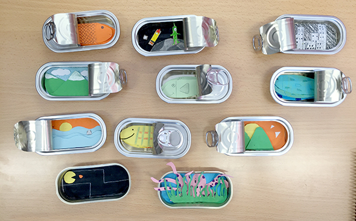
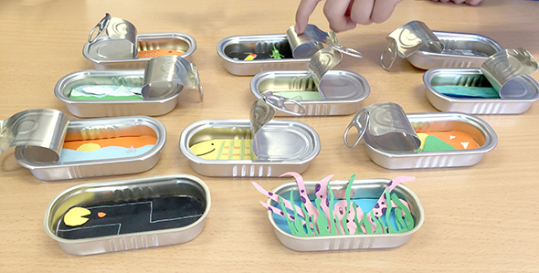

Para los mayores que pasan por la parada de CEIP SANTA TERESA este domingo en les Trobades los ninõs de sexto han preparado una manualidad dentro de una lata. Puedes hacer tu propio paisaje en 3D! o muchas mas cosas. Aquí podes ver unos ejemplos estupendisimos!